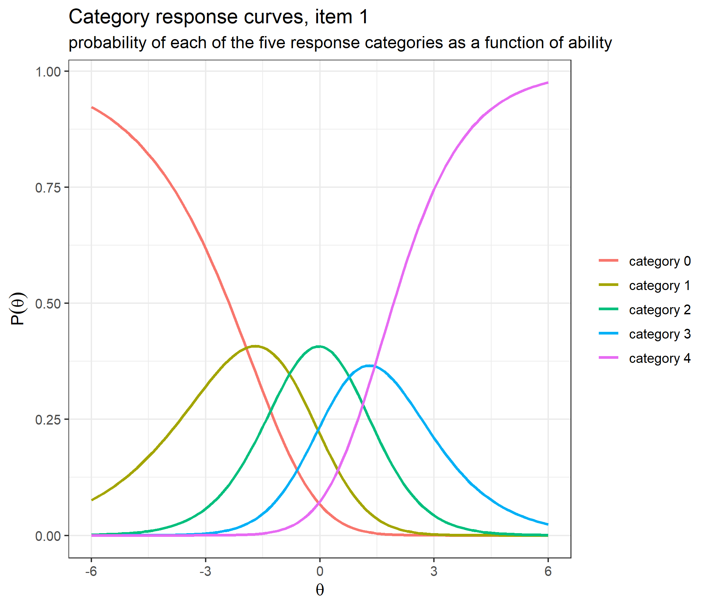
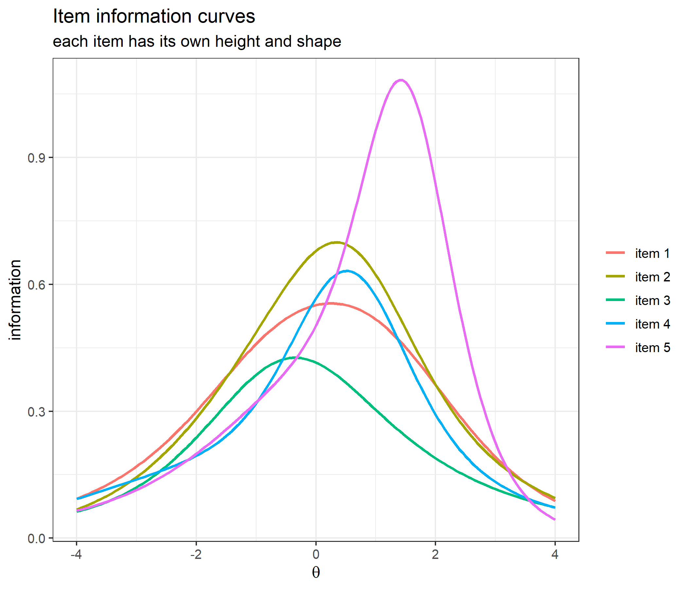
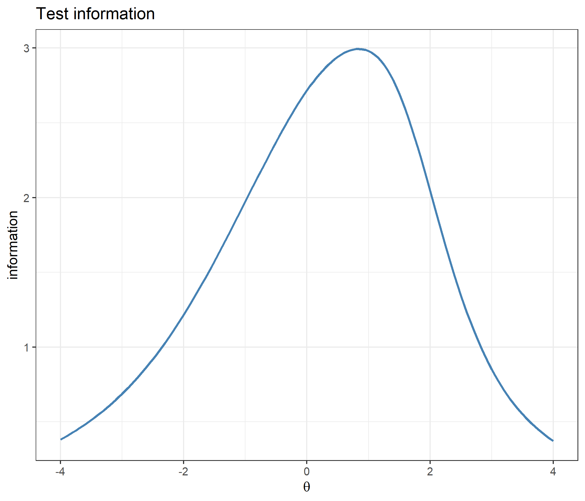
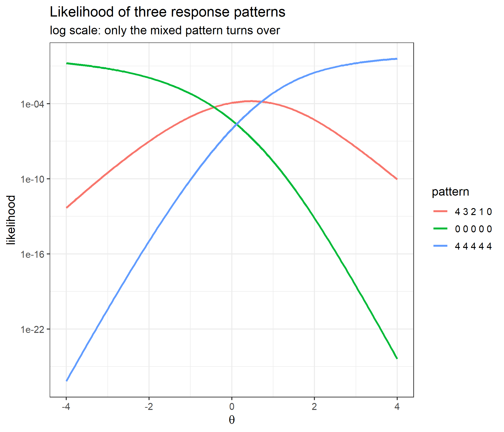
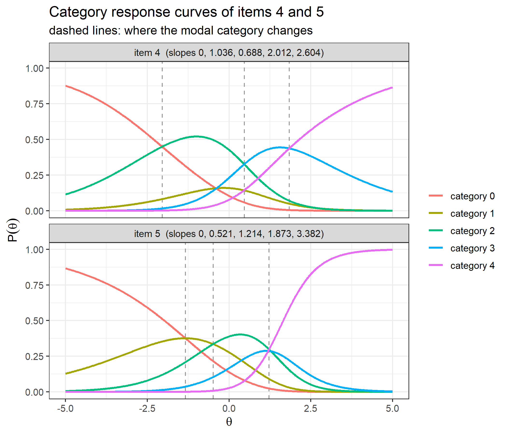
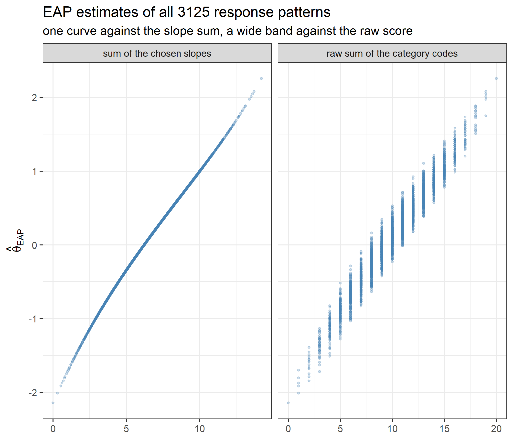
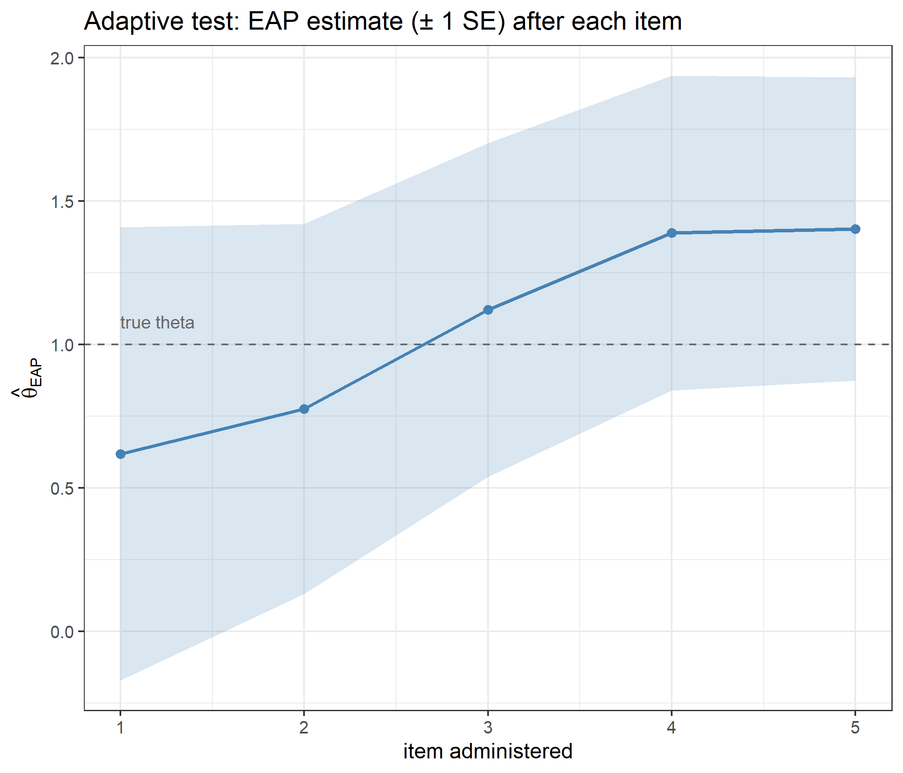

Code
library(ggplot2)
library(catR)
source("R/cat_eap_common.R", local = knitr::knit_global())
source("R/cat_eap_nrm.R", local = knitr::knit_global())
source("R/cat_eap_pcm.R", local = knitr::knit_global())The functions in cat_eap_common.R and cat_eap_nrm.R are adapted from the source code of the catR package by David Magis, Gilles Raîche and Juan Ramón Barrada (Magis & Raîche, 2012; Magis & Barrada, 2017). The model parameterisations, the formulas for the response probabilities and their derivatives, the item information, maximum-information item selection and the trapezoidal EAP integration all follow catR’s Pi(), Ii(), nextItem(), eapEst(), eapSem() and integrate.catR(), and much of the code keeps catR’s structure line for line. The purpose of the rewrite is teaching, not replacement: every step is written out in plain base R so that it can be read, and catR remains the reference implementation that every function is checked against below. catR is free software distributed under the GNU General Public License (version 3 or later).
Every other model in this series assumes that the response categories of an item are ordered: a higher code means more of the trait. Bock’s Nominal Response Model (NRM) drops that assumption (Bock, 1972). Each category gets its own slope and its own intercept, and the data decide how the categories line up along the ability scale. This is the natural model for a multiple-choice item scored by which option was chosen, not only whether it was the key, because the distractors may carry information about ability. It is equally useful for a rating item whose category order you would rather check than impose. The ordered-category Rasch models come out as special cases, as one of the worked examples below shows.
working_examples/cat_eap_nrm.R, together with the two shared helpers in working_examples/cat_eap_common.R, implements the full pipeline in eight small functions. They are written in base R and have no runtime dependency on catR:
| Function | File | Purpose | catR equivalent it mirrors |
|---|---|---|---|
density_function() |
cat_eap_common.R |
Normal density | stats::dnorm() |
integrate_cat() |
cat_eap_common.R |
Numerical integration (trapezoidal rule) | catR::integrate.catR() |
compute_pi_nrm() |
cat_eap_nrm.R |
Category response probabilities and their first four derivatives | catR::Pi(model="NRM") |
compute_ii_nrm() |
cat_eap_nrm.R |
Item information and its first three derivatives | catR::Ii(model="NRM") |
compute_next_item_nrm() |
cat_eap_nrm.R |
Maximum Fisher information item selection | catR::nextItem(model="NRM", criterion="MFI") |
compute_likelihood_nrm() |
cat_eap_nrm.R |
Likelihood of a nominal response pattern | (internal to catR::eapEst()) |
compute_eap_nrm() |
cat_eap_nrm.R |
EAP ability estimate | catR::eapEst(model="NRM") |
compute_eap_se_nrm() |
cat_eap_nrm.R |
EAP standard error | catR::eapSem(model="NRM") |
Two of the outputs go beyond catR. compute_pi_nrm() also returns the fourth derivative of the category probabilities (d4Pi), and compute_ii_nrm() returns the third derivative of the item information (d3Ii). catR stops one order earlier in both cases, so these two are checked against central finite differences instead of against the package, and d3Ii also against an exact identity derived below.
library(ggplot2)
library(catR)
source("R/cat_eap_common.R", local = knitr::knit_global())
source("R/cat_eap_nrm.R", local = knitr::knit_global())
source("R/cat_eap_pcm.R", local = knitr::knit_global())cat_eap_pcm.R is loaded only for the worked example that recovers the Partial Credit Model from the NRM. The example code at the end of both model files is commented out, so sourcing them only defines their functions; the bank used in this vignette is defined explicitly below.
An item \(j\) with categories \(0,1,\ldots,m_j\) needs \(m_j+1\) curves that sum to 1 at every ability level. The NRM builds them with a multinomial logit. Every category \(k\) has its own linear predictor \(\alpha_{jk}\theta + c_{jk}\):
\[P_{jk}(\theta) = P(X_j = k \mid \theta) = \frac{\exp\left(\alpha_{jk}\,\theta + c_{jk}\right)}{\sum_{h=0}^{m_j}\exp\left(\alpha_{jh}\,\theta + c_{jh}\right)}, \qquad k = 0,1,\ldots,m_j, \qquad \alpha_{j0} = c_{j0} = 0 .\]
The key to reading the model is that the log-odds against the reference category form a straight line in \(\theta\):
\[\log\frac{P(X_j=k\mid\theta)}{P(X_j=0\mid\theta)} = \alpha_{jk}\,\theta + c_{jk}.\]
The most probable (modal) category at any \(\theta\) is the one whose line is highest. Far out to the right that is the line with the largest slope, and far out to the left the one with the smallest slope. In between, the categories take turns on top in the order of their slopes, not of their codes. A category whose line never reaches the upper envelope is never modal at all. The codes \(0,\ldots,m_j\) are only labels, and that is what “nominal” means.
cat_eap_nrm.R expects one row per item and the parameters in pairs, one pair for each non-reference category:
| column | 1 | 2 | 3 | 4 | \(\cdots\) | \(2m-1\) | \(2m\) |
|---|---|---|---|---|---|---|---|
| holds | \(\alpha_{j1}\) | \(c_{j1}\) | \(\alpha_{j2}\) | \(c_{j2}\) | \(\cdots\) | \(\alpha_{jm}\) | \(c_{jm}\) |
Category 0 has no columns because its slope and intercept are fixed at zero. A bank with \(2m\) columns therefore describes items with up to \(m+1\) categories, where \(m\) is the largest \(m_j\) in the bank; the code computes \(m+1\) as ncol(bank)/2 + 1. Five categories coded 0 to 4 need eight columns. compute_pi_nrm(), which every other function calls, begins with bank <- rbind(bank), so a single item may also be passed as a plain vector.
An item with fewer categories than the widest item (\(m_j < m\)) is padded with NA pairs at the end of its row. The exact rule the code applies is this: every pair in which \(\alpha_{jk}\) or \(c_{jk}\) is NA is dropped, the pairs that remain become categories \(1,\ldots,m_j\) in their left-to-right order, and their probabilities fill columns 1 to \(m_j+1\) of the item’s row, with NA in the rest. A worked example below shows what happens when the gap is left in the middle instead.
A mirt model fitted with itemtype = "nominal" writes the exponent of category \(k\) as \(\texttt{a1}_j\,\texttt{ak}_{jk}\,\theta + \texttt{d}_{jk}\), with \(\texttt{ak}_{j0} = \texttt{d}_{j0} = 0\). The roxygen documentation of compute_pi_nrm() converts it with
\[\alpha_{jk} = \texttt{a1}_j\,\texttt{ak}_{jk}, \qquad c_{jk} = \texttt{d}_{jk}, \qquad k = 1,\ldots,m_j .\]
mirt numbers the observed categories of each item from 0, and the responses passed to these functions must be coded the same way.
Write \(\gamma_{jk} = \exp(\alpha_{jk}\theta + c_{jk})\) and \(S_j = \sum_{h=0}^{m_j} \gamma_{jh}\), so that \(P_{jk} = \gamma_{jk}/S_j\). Each derivative of \(\gamma_{jk}\) just multiplies it by its slope again, so each derivative of \(S_j\) is a slope-weighted sum:
\[\gamma^{(r)}_{jk} = \frac{d^r\gamma_{jk}}{d\theta^r} = \alpha_{jk}^{\,r}\,\gamma_{jk}, \qquad S^{(r)}_j = \frac{d^rS_j}{d\theta^r} = \sum_{h=0}^{m_j}\alpha_{jh}^{\,r}\,\gamma_{jh}.\]
In the code gamma, dgamma, d2gamma, d3gamma and d4gamma hold \(\gamma\alpha^0,\ldots,\gamma\alpha^4\), and sum_gamma to sum_d4gamma hold \(S_j,\ldots,S^{(4)}_j\). The derivatives of \(P_{jk}\) then follow from the quotient rule applied to \(\gamma_{jk}/S_j\). With primes for derivatives with respect to \(\theta\) (\(\gamma'_{jk} = \gamma^{(1)}_{jk}\), \(S''_j = S^{(2)}_j\), and so on), compute_pi_nrm() computes
\[ \begin{aligned} P'_{jk} &= \frac{\gamma'_{jk}}{S_j} - \frac{\gamma_{jk}S'_j}{S_j^2},\\ P''_{jk} &= \frac{\gamma''_{jk}}{S_j} - \frac{2\gamma'_{jk}S'_j + \gamma_{jk}S''_j}{S_j^2} + \frac{2\gamma_{jk}S'^2_j}{S_j^3},\\ P'''_{jk} &= \frac{\gamma'''_{jk}}{S_j} - \frac{\gamma_{jk}S'''_j + 3\gamma'_{jk}S''_j + 3\gamma''_{jk}S'_j}{S_j^2} + \frac{6\gamma_{jk}S'_jS''_j + 6\gamma'_{jk}S'^2_j}{S_j^3} - \frac{6\gamma_{jk}S'^3_j}{S_j^4},\\ P^{(4)}_{jk} &= \frac{\gamma^{(4)}_{jk}}{S_j} - \frac{\gamma_{jk}S^{(4)}_j + 4\gamma'_{jk}S'''_j + 6\gamma''_{jk}S''_j + 4\gamma'''_{jk}S'_j}{S_j^2} + \frac{12\gamma''_{jk}S'^2_j + 24\gamma'_{jk}S'_jS''_j + 8\gamma_{jk}S'_jS'''_j + 6\gamma_{jk}S''^2_j}{S_j^3}\\ &\qquad - \frac{24\gamma'_{jk}S'^3_j + 36\gamma_{jk}S'^2_jS''_j}{S_j^4} + \frac{24\gamma_{jk}S'^4_j}{S_j^5}. \end{aligned} \]
The first one has a particularly clean form:
\[P'_{jk} = P_{jk}\,\big(\alpha_{jk} - \bar\alpha_j(\theta)\big), \qquad \bar\alpha_j(\theta) = \sum_{h=0}^{m_j} P_{jh}\,\alpha_{jh}.\]
A category’s probability rises with \(\theta\) exactly when its slope is above the current average slope. compute_pi_nrm() returns Pi, dPi, d2Pi, d3Pi and d4Pi, each with one row per item and one column per category, and NA in the columns a padded item does not have. The first four match catR::Pi(). d4Pi has no catR counterpart; this file needs it for the third derivative of the information.
No probability floor. The dichotomous branch of catR::Pi() replaces a probability of exactly 0 or 1 with \(10^{-10}\) or \(1-10^{-10}\). The NRM branch does not, and neither does compute_pi_nrm(). None is needed: the information below divides by \(P_{jk}\) but never by \(1-P_{jk}\), so a probability that rounds to 1 does no harm, and \(P_{jk}\), a ratio of positive exponentials, stays positive until exp() underflows or overflows, which for the example bank below happens only beyond \(|\theta| \approx 200\).
The metric constant. The NRM has no \(D\). A constant multiplying the exponent would just be absorbed into the slopes and intercepts. Every function in the file still accepts D so that it has the same interface as the other model files, but ignores it, as catR does. This is checked below.
The polytomous Fisher information of an item is
\[I_j(\theta) = \sum_{k=0}^{m_j} \frac{P'^2_{jk}(\theta)}{P_{jk}(\theta)}.\]
compute_ii_nrm() computes exactly this sum, skipping the NA cells of padded items (rowSums(..., na.rm = TRUE)). Test information is the sum of the item informations over the \(n\) items of a test, and its reciprocal square root is the asymptotic standard error of a maximum-likelihood ability estimate:
\[I(\theta) = \sum_{j=1}^{n} I_j(\theta).\]
Substituting \(P'_{jk} = P_{jk}(\alpha_{jk}-\bar\alpha_j)\) gives
\[I_j(\theta) = \sum_{k=0}^{m_j} P_{jk}\,\big(\alpha_{jk}-\bar\alpha_j\big)^2 = \operatorname{Var}_\theta\!\left(\alpha_{j,X_j}\right).\]
The information is the variance of the slope of the category the examinee chooses. It is large where categories with very different slopes are both probable, and it depends on the spread of the slopes, not on the category codes. Because the variance of a quantity confined to an interval can never exceed a quarter of the squared length of the interval, an item’s information can never exceed \((\max_k\alpha_{jk}-\min_k\alpha_{jk})^2/4\).
The derivatives follow from the same idea. Moving from \(\theta\) to \(\theta + t\) reweights every category by \(e^{t\alpha_{jk}}\). So the cumulant generating function of the chosen slope is \(\log S_j(\theta+t) - \log S_j(\theta)\), and its cumulants are the \(\theta\)-derivatives of \(\log S_j\):
\[\kappa_r(\theta) = \frac{d^r}{d\theta^r}\log S_j(\theta), \qquad \frac{d\kappa_r}{d\theta} = \kappa_{r+1}.\]
\(\kappa_1 = \bar\alpha_j\) and \(\kappa_2 = I_j\). So Ii, dIi, d2Ii and d3Ii are the second to fifth cumulants of the chosen slope. In terms of its central moments \(\mu_r = \sum_k P_{jk}(\alpha_{jk}-\bar\alpha_j)^r\):
\[I_j = \kappa_2 = \mu_2,\quad I_j' = \kappa_3 = \mu_3,\quad I_j'' = \kappa_4 = \mu_4 - 3\mu_2^2,\quad I_j''' = \kappa_5 = \mu_5 - 10\,\mu_3\,\mu_2.\]
compute_ii_nrm() does not use this identity. It differentiates each category term \(P'^2_{jk}/P_{jk}\) directly and sums over the categories, with the same formulas as catR::Ii() for the first three quantities and one more order for d3Ii:
\[I'_j = \sum_{k=0}^{m_j}\left(\frac{2P'_{jk}P''_{jk}}{P_{jk}} - \frac{P'^3_{jk}}{P^2_{jk}}\right) \qquad I''_j = \sum_{k=0}^{m_j}\left(\frac{2P''^2_{jk} + 2P'_{jk}P'''_{jk}}{P_{jk}} - \frac{5P'^2_{jk}P''_{jk}}{P^2_{jk}} + \frac{2P'^4_{jk}}{P^3_{jk}}\right)\]
\[I'''_j = \sum_{k=0}^{m_j}\left(\frac{6P''_{jk}P'''_{jk} + 2P'_{jk}P^{(4)}_{jk}}{P_{jk}} - \frac{12P'_{jk}P''^2_{jk} + 7P'^2_{jk}P'''_{jk}}{P^2_{jk}} + \frac{18P'^3_{jk}P''_{jk}}{P^3_{jk}} - \frac{6P'^5_{jk}}{P^4_{jk}}\right)\]
The identity is an independent way to check them.
An adaptive test picks, at each step, the unadministered item that is most informative at the current ability estimate. This is the Maximum Fisher Information (MFI) criterion. compute_next_item_nrm() computes \(I_j(\hat\theta)\) for every item not listed in out, the indices of the items already administered, and returns the index of the best one, its information, and the indices that were available:
\[j^{*} = \arg\max_{j\notin\texttt{out}} I_j(\hat\theta)\]
Each NRM item has its own slopes and intercepts, so the information curves differ in both height and shape, and the information of every available item has to be computed at \(\hat\theta\).
compute_next_item_nrm() also has a randomesque argument, which is standard exposure control. With
\[K = \max\big(1,\ \min(\lfloor\texttt{randomesque}\rfloor,\ \text{number of available items})\big),\]
the next item is drawn uniformly at random from the \(K\) available items with the largest \(I_j(\hat\theta)\), instead of always taking the single best; ties in that ranking are broken by item order, as order() does. The file’s documentation notes two deliberate differences from catR::nextItem() that only matter in edge cases. When several items tie exactly, catR draws one of them at random and this function takes the first. With randomesque above 1, catR also keeps every item tied with the last one kept.
Under local independence the likelihood of a pattern \(\mathbf{x} = (x_1,\ldots,x_n)\), with each \(x_j\) coded \(0,\ldots,m_j\), is
\[L(\theta) = \prod_{j=1}^{n} P_{j,x_j}(\theta).\]
The response \(x_j\) of item \(j\) selects column \(x_j+1\) of the probability matrix (prob[i, x[i] + 1] in the code); the +1 is there because categories start at 0 and R columns start at 1. catR computes this product inside eapEst() and eapSem() without exporting it; compute_likelihood_nrm() exposes it as a function of its own, and the two EAP functions call it. Writing the product out shows what the response pattern actually contributes:
\[L(\theta) = \frac{\exp\!\Big(\theta\sum_j \alpha_{j,x_j} + \sum_j c_{j,x_j}\Big)}{\prod_j S_j(\theta)}.\]
The denominator depends on \(\theta\) but not on the responses, and the intercept sum is a constant. The pattern reaches \(\theta\) only through the sum of the slopes of the chosen categories, \(\sum_j\alpha_{j,x_j}\). That sum is a sufficient statistic for \(\theta\) (for known item parameters). The raw sum of the category codes is not, because the codes carry no order; it becomes sufficient only when every slope is its category code times one constant shared by the whole bank, as in the Partial Credit Model of the worked example below.
The same formula shows where Maximum Likelihood breaks down. If every response falls in the category with the largest slope on its item, each factor \(P_{j,x_j}\) keeps rising with \(\theta\) and the likelihood has no finite maximum. The same holds at the other end for the smallest slopes.
As in the other models, a prior \(\pi(\theta)\) on ability turns the likelihood into a posterior. The prior is the normal density that density_function() writes out, standard normal by default:
\[\pi(\theta) = \frac{1}{\sigma\sqrt{2\pi}}\exp\!\left(-\frac{(\theta-\mu)^2}{2\sigma^2}\right), \qquad (\mu,\sigma) = \texttt{priorPar}\]
EAP reports the posterior mean and standard deviation (Bock & Mislevy, 1982):
\[\hat\theta_{EAP} = \frac{\displaystyle\int \theta\,\pi(\theta)\,L(\theta)\,d\theta}{\displaystyle\int \pi(\theta)\,L(\theta)\,d\theta} \qquad SE(\hat\theta_{EAP}) = \sqrt{\frac{\displaystyle\int (\theta-\hat\theta_{EAP})^2\,\pi(\theta)\,L(\theta)\,d\theta}{\displaystyle\int \pi(\theta)\,L(\theta)\,d\theta}}\]
For a response pattern \(\mathbf{x}\), with the likelihood \(L\) above, the integrands of the two numerators and of the common denominator are
\[ \begin{aligned} g(s) &= s\,\pi(s)\,L(s),\\ g_{SE}(s) &= (s-\hat\theta_{EAP})^2\,\pi(s)\,L(s),\\ h(s) &= \pi(s)\,L(s). \end{aligned} \]
On the quadrature grid \(X=(\theta_1,\ldots,\theta_Q)\), where \(Q=\texttt{nqp}\) and \(\theta_q=\texttt{lower}+(q-1)(\texttt{upper}-\texttt{lower})/(Q-1)\), the two are approximated by
\[ \hat\theta_{EAP} \approx \frac{\operatorname{Trap}(X,\,g(X))}{\operatorname{Trap}(X,\,h(X))} \qquad SE(\hat\theta_{EAP}) \approx \sqrt{\frac{\operatorname{Trap}(X,\,g_{SE}(X))}{\operatorname{Trap}(X,\,h(X))}}, \]
where \(g(X)=(g(\theta_1),\ldots,g(\theta_Q))\), and likewise for \(g_{SE}\) and \(h\). Trap denotes the trapezoidal integration implemented by integrate_cat() below. The defaults are 33 points from \(-4\) to \(4\), as in catR.
All four integrals are finite, and both denominators are positive, for every response pattern: \(0<L(\theta)\le 1\) and the normal prior has a finite mean and variance. This is what rescues the patterns where Maximum Likelihood has no answer, whose likelihood never shrinks to zero in one tail and so cannot be integrated on its own. compute_eap_se_nrm() takes theta as a free argument, the value used for \(\hat\theta_{EAP}\) in \(g_{SE}\). Passing the EAP estimate gives the posterior standard deviation; any other value gives the root mean squared deviation around that value.
None of these integrals has a closed form, so the integrands are evaluated at the nqp quadrature points \(\theta_1<\cdots<\theta_Q\) and integrated with the trapezoidal rule, which approximates the area between two adjacent points by a trapezoid, the width times the average of the two heights:
\[\int_{\texttt{lower}}^{\texttt{upper}} f(\theta)\,d\theta \approx \operatorname{Trap}(X,\,f(X)) = \sum_{q=1}^{Q-1} (\theta_{q+1}-\theta_q)\,\frac{f(\theta_q)+f(\theta_{q+1})}{2}\]
integrate_cat() implements exactly this sum; density_function() supplies \(\pi(\theta)\). Cutting the integrals off at lower and upper is a second approximation, which the worked example on the numerical settings measures.
This is the five-item, five-category bank from the roxygen examples of cat_eap_nrm.R. Categories are coded 0 to 4, so there are \(4 \times 2 = 8\) columns.
bank <- matrix(c(0.614, 0.782, 0.297, 1.036, 0.521,
1.187, 0.906, 1.523, 0.418, 0.694,
1.395, 1.487, 1.103, 0.688, 1.214,
1.812, 1.093, 2.176, 1.407, 1.032,
2.106, 2.391, 1.724, 2.012, 1.873,
1.264, 0.517, 1.936, 0.793, 0.186,
2.918, 3.087, 2.215, 2.604, 3.382,
0.097, -0.814, 1.012, -0.296, -1.618),
nrow = 5,
dimnames = list(1:5, c("alpha1", "c1", "alpha2", "c2",
"alpha3", "c3", "alpha4", "c4")))
bank alpha1 c1 alpha2 c2 alpha3 c3 alpha4 c4
1 0.614 1.187 1.395 1.812 2.106 1.264 2.918 0.097
2 0.782 0.906 1.487 1.093 2.391 0.517 3.087 -0.814
3 0.297 1.523 1.103 2.176 1.724 1.936 2.215 1.012
4 1.036 0.418 0.688 1.407 2.012 0.793 2.604 -0.296
5 0.521 0.694 1.214 1.032 1.873 0.186 3.382 -1.618c(columns = ncol(bank), categories = ncol(bank) / 2 + 1) columns categories
8 5 Every slope is positive, so the reference category 0 has the smallest slope on every item, and alpha4 is the largest slope in every row.
catRv <- seq(-3, 3, by = 0.1)
comparison <- data.frame(x = v, density_function = density_function(v), dnorm = dnorm(v))
max(abs(comparison$density_function - comparison$dnorm))[1] 2.775558e-17ggplot(comparison, aes(x = x)) +
geom_line(aes(y = density_function, color = "density_function()"), linewidth = 1) +
geom_point(aes(y = dnorm, color = "dnorm()"), shape = 1) +
labs(title = "Hand-written normal density vs. dnorm()",
x = expression(theta), y = "density", color = NULL) +
theme_bw(base_size = 12)
The function writes out the textbook normal density longhand. It uses exp(1) instead of a hard-coded 2.71828; the documentation notes that the literal is accurate to only six significant digits and shifts the EAP estimate in the seventh decimal.
x <- seq(from = -3, to = 3, length = 33)
y <- round(exp(x), 2)
c(integrate_cat = integrate_cat(x, y),
integrate.catR = catR::integrate.catR(x, y),
difference = integrate_cat(x, y) - catR::integrate.catR(x, y)) integrate_cat integrate.catR difference
20.09437 20.09437 0.00000 Both approximate \(\int_{-3}^{3} e^x\,dx\), with the heights rounded to two decimals, on the same 33-point trapezoidal grid and return the same number.
catR returns four matrices and compute_pi_nrm() returns five. The four they share are compared at seven values of \(\theta\), out to \(\pm 6\), and at both values of \(D\), as the largest absolute difference for each matrix. D_ignored checks that both functions return the same output for \(D = 1.702\) as for \(D = 1\):
theta_check <- c(-6, -3, -1.2, 0, 0.7, 2.5, 6)
pi_diff <- do.call(rbind, lapply(c(1, 1.702), function(d) do.call(rbind, lapply(theta_check, function(th) {
ours <- compute_pi_nrm(th, bank, D = d)
ref <- catR::Pi(th, bank, model = "NRM", D = d)
data.frame(D = d, theta = th,
t(sapply(names(ref), function(nm) max(abs(ours[[nm]] - ref[[nm]])))),
D_ignored = identical(ours, compute_pi_nrm(th, bank)) &&
identical(ref, catR::Pi(th, bank, model = "NRM")))
}))))
pi_diff D theta Pi dPi d2Pi d3Pi D_ignored
1 1.000 -6.0 0 0 0 0 TRUE
2 1.000 -3.0 0 0 0 0 TRUE
3 1.000 -1.2 0 0 0 0 TRUE
4 1.000 0.0 0 0 0 0 TRUE
5 1.000 0.7 0 0 0 0 TRUE
6 1.000 2.5 0 0 0 0 TRUE
7 1.000 6.0 0 0 0 0 TRUE
8 1.702 -6.0 0 0 0 0 TRUE
9 1.702 -3.0 0 0 0 0 TRUE
10 1.702 -1.2 0 0 0 0 TRUE
11 1.702 0.0 0 0 0 0 TRUE
12 1.702 0.7 0 0 0 0 TRUE
13 1.702 2.5 0 0 0 0 TRUE
14 1.702 6.0 0 0 0 0 TRUEThe two implementations run the same arithmetic in the same order, so the results are identical and not merely close, and \(D\) has no effect in either one.
catR has no fourth derivative to compare d4Pi with, so it is checked against a central finite difference of d3Pi, \(\big(f(\theta+\varepsilon)-f(\theta-\varepsilon)\big)/2\varepsilon\) with \(\varepsilon = 10^{-4}\), whose own error is of order \(\varepsilon^2\):
eps <- 1e-4
data.frame(theta = theta_check,
fd_gap_d4Pi = sapply(theta_check, function(th)
max(abs((compute_pi_nrm(th + eps, bank)$d3Pi - compute_pi_nrm(th - eps, bank)$d3Pi) / (2 * eps) -
compute_pi_nrm(th, bank)$d4Pi))),
largest_abs_d4Pi = sapply(theta_check, function(th) max(abs(compute_pi_nrm(th, bank)$d4Pi)))) theta fd_gap_d4Pi largest_abs_d4Pi
1 -6.0 1.453050e-11 0.007268628
2 -3.0 2.857740e-10 0.080349896
3 -1.2 1.710727e-09 0.280261715
4 0.0 5.009900e-09 0.540461044
5 0.7 9.414205e-09 0.827247055
6 2.5 6.664095e-09 0.575148861
7 6.0 3.351488e-10 0.009455364The gaps are \(10^{-8}\) or smaller, the size of the finite difference’s own error, against fourth derivatives of order 0.01 to 1.
A four-category item in a five-category bank puts NA in its last pair and is scored 0 to 3. With item 5 padded this way, both implementations still return identical probabilities, and identical information, at every \(\theta\) above:
bank_mixed <- bank
bank_mixed[5, c("alpha4", "c4")] <- NA
round(compute_pi_nrm(theta = 0, bank_mixed)$Pi, 6) cat0 cat1 cat2 cat3 cat4
Item1 0.066483 0.217882 0.407057 0.235322 0.073256
Item2 0.116582 0.288470 0.347787 0.195506 0.051655
Item3 0.041530 0.190455 0.365920 0.287843 0.114253
Item4 0.104642 0.158943 0.427324 0.231260 0.077831
Item5 0.142596 0.285436 0.400221 0.171746 NAc(Pi = all(sapply(theta_check, function(th)
identical(compute_pi_nrm(th, bank_mixed)[1:4], catR::Pi(th, bank_mixed, model = "NRM")))),
Ii = all(sapply(theta_check, function(th)
identical(compute_ii_nrm(th, bank_mixed)[1:3], catR::Ii(th, bank_mixed, model = "NRM"))))) Pi Ii
TRUE TRUE theta_grid <- seq(-6, 6, by = 0.1)
curves <- t(sapply(theta_grid, function(th) compute_pi_nrm(theta = th, bank)$Pi[1, ]))
range(rowSums(curves))[1] 1 1df_curves <- data.frame(theta = theta_grid, curves)
names(df_curves)[-1] <- paste0("category ", 0:4)
df_long <- reshape2::melt(df_curves, id.vars = "theta",
variable.name = "category", value.name = "P")
ggplot(df_long, aes(x = theta, y = P, color = category)) +
geom_line(linewidth = 1) +
labs(title = "Category response curves, item 1",
subtitle = "probability of each of the five response categories as a function of ability",
x = expression(theta), y = expression(P(theta)), color = NULL) +
theme_bw(base_size = 12)
The five curves sum to 1 at every \(\theta\) on the grid. For item 1 the slopes increase with the code, so the curves look like those of an ordered model: category 0 at the bottom of the scale, category 4 at the top, the others in order in between. The worked example on nominal categories below looks at items where that picture breaks.
The same comparison for the information and the two derivatives catR returns:
ii_diff <- do.call(rbind, lapply(c(1, 1.702), function(d) do.call(rbind, lapply(theta_check, function(th) {
ours <- compute_ii_nrm(th, bank, D = d)
ref <- catR::Ii(th, bank, model = "NRM", D = d)
data.frame(D = d, theta = th,
t(sapply(names(ref), function(nm) max(abs(ours[[nm]] - ref[[nm]])))))
}))))
ii_diff D theta Ii dIi d2Ii
1 1.000 -6.0 0 0 0
2 1.000 -3.0 0 0 0
3 1.000 -1.2 0 0 0
4 1.000 0.0 0 0 0
5 1.000 0.7 0 0 0
6 1.000 2.5 0 0 0
7 1.000 6.0 0 0 0
8 1.702 -6.0 0 0 0
9 1.702 -3.0 0 0 0
10 1.702 -1.2 0 0 0
11 1.702 0.0 0 0 0
12 1.702 0.7 0 0 0
13 1.702 2.5 0 0 0
14 1.702 6.0 0 0 0catR stops at d2Ii, so d3Ii is checked in two independent ways: against a central finite difference of d2Ii, as for d4Pi, and against the cumulant identity \(I, I', I'', I''' = \kappa_2,\kappa_3,\kappa_4,\kappa_5\) of the theory section. slope_cumulants() computes the cumulants of the chosen slope from its central moments, using only the probabilities; its k2 column is the documentation’s claim that the information is the variance of the chosen slope.
slope_cumulants <- function(theta, b) {
P <- compute_pi_nrm(theta, b)$Pi
a <- cbind(0, b[, seq(1, ncol(b), by = 2), drop = FALSE])
mu <- rowSums(P * a, na.rm = TRUE)
cm <- function(r) rowSums(P * (a - mu)^r, na.rm = TRUE)
cbind(k2 = cm(2), k3 = cm(3),
k4 = cm(4) - 3 * cm(2)^2,
k5 = cm(5) - 10 * cm(3) * cm(2))
}
id_ii <- do.call(rbind, lapply(theta_check, function(th) {
up <- compute_ii_nrm(th + eps, bank)
dn <- compute_ii_nrm(th - eps, bank)
at <- compute_ii_nrm(th, bank)
k <- slope_cumulants(th, bank)
data.frame(theta = th,
fd_d3Ii = max(abs((up$d2Ii - dn$d2Ii) / (2 * eps) - at$d3Ii)),
k2_vs_Ii = max(abs(k[, "k2"] - at$Ii)),
k3_vs_dIi = max(abs(k[, "k3"] - at$dIi)),
k4_vs_d2Ii = max(abs(k[, "k4"] - at$d2Ii)),
k5_vs_d3Ii = max(abs(k[, "k5"] - at$d3Ii)))
}))
id_ii theta fd_d3Ii k2_vs_Ii k3_vs_dIi k4_vs_d2Ii k5_vs_d3Ii
1 -6.0 7.701179e-12 6.938894e-18 5.204170e-18 1.214306e-17 3.122502e-17
2 -3.0 2.027939e-10 2.775558e-17 4.163336e-17 1.595946e-16 4.787837e-16
3 -1.2 1.938894e-09 5.551115e-17 1.110223e-16 1.318390e-15 2.164935e-15
4 0.0 8.582873e-09 2.220446e-16 6.869505e-16 6.050715e-15 3.293546e-14
5 0.7 5.116648e-09 2.220446e-16 1.221245e-15 6.661338e-15 1.924017e-13
6 2.5 1.623570e-08 3.330669e-16 1.998401e-15 3.119727e-14 2.806505e-13
7 6.0 3.195470e-11 4.857226e-17 2.064321e-16 3.664603e-15 3.238555e-14The finite difference agrees to about \(10^{-8}\), the size of its own error, and the cumulant identity holds to rounding error for the information and all three of its derivatives, including the one catR does not compute.
info_grid <- seq(-4, 4, by = 0.05)
info <- t(sapply(info_grid, function(th) compute_ii_nrm(th, bank)$Ii))
df_info <- data.frame(theta = info_grid, info)
names(df_info)[-1] <- paste0("item ", 1:5)
df_info_long <- reshape2::melt(df_info, id.vars = "theta",
variable.name = "item", value.name = "information")
ggplot(df_info_long, aes(x = theta, y = information, color = item)) +
geom_line(linewidth = 1) +
labs(title = "Item information curves",
subtitle = "each item has its own height and shape",
x = expression(theta), y = "information", color = NULL) +
theme_bw(base_size = 12)
df_test <- data.frame(theta = info_grid, information = rowSums(info))
ggplot(df_test, aes(x = theta, y = information)) +
geom_line(linewidth = 1, color = "steelblue") +
labs(title = "Test information", x = expression(theta), y = "information") +
theme_bw(base_size = 12)
mine <- compute_next_item_nrm(theta = 0, bank)
theirs <- catR::nextItem(bank, model = "NRM", theta = 0, criterion = "MFI")
c(mine_item = mine$item, catR_item = theirs$item,
mine_info = mine$info, catR_info = theirs$info)mine_item catR_item mine_info catR_info
2.000000 2.000000 0.679397 0.679397 With items already administered excluded via out:
mine <- compute_next_item_nrm(theta = 1.5, bank, out = c(2, 5))
theirs <- catR::nextItem(bank, model = "NRM", theta = 1.5, out = c(2, 5), criterion = "MFI")
c(mine_item = mine$item, catR_item = theirs$item,
mine_info = mine$info, catR_info = theirs$info)mine_item catR_item mine_info catR_info
1.0000000 1.0000000 0.4508549 0.4508549 catR has no exported likelihood function to compare against, so the check rebuilds the same product from catR’s own probability matrix, for several patterns at every \(\theta\) above. The likelihood spans many orders of magnitude over that range, so the table reports the largest relative difference for each pattern:
lik_patterns <- list(c(4, 3, 2, 1, 0), c(0, 0, 0, 0, 0), c(4, 4, 4, 4, 4), c(1, 0, 1, 0, 1))
lik_gap <- sapply(lik_patterns, function(x) max(sapply(theta_check, function(th) {
P_catR <- catR::Pi(th = th, bank, model = "NRM")$Pi
abs(compute_likelihood_nrm(theta = th, bank = bank, x = x) / prod(P_catR[cbind(1:5, x + 1)]) - 1)
})))
names(lik_gap) <- sapply(lik_patterns, paste, collapse = " ")
lik_gap 4 3 2 1 0 0 0 0 0 0 4 4 4 4 4 1 0 1 0 1
2.220446e-16 2.220446e-16 2.220446e-16 2.220446e-16 lik_grid <- seq(-4, 4, by = 0.05)
df_lik <- data.frame(theta = lik_grid,
sapply(lik_patterns[1:3], function(x)
sapply(lik_grid, function(th) compute_likelihood_nrm(th, bank, x))))
names(df_lik)[-1] <- names(lik_gap)[1:3]
df_lik_long <- reshape2::melt(df_lik, id.vars = "theta",
variable.name = "pattern", value.name = "likelihood")
ggplot(df_lik_long, aes(x = theta, y = likelihood, color = pattern)) +
geom_line(linewidth = 1) +
scale_y_log10() +
labs(title = "Likelihood of three response patterns",
subtitle = "log scale: only the mixed pattern turns over",
x = expression(theta), y = "likelihood", color = "pattern") +
theme_bw(base_size = 12)
The likelihood of (4, 3, 2, 1, 0) has an interior maximum. Category 4 has the largest slope and category 0 the smallest on every item, so the all-4 likelihood rises and the all-0 likelihood falls over the whole range, and neither has a finite maximum, as the theory section predicts.
patterns <- list(c(0, 0, 0, 0, 0), c(1, 1, 1, 1, 1), c(2, 2, 2, 2, 2),
c(3, 3, 3, 3, 3), c(4, 4, 4, 4, 4), c(4, 3, 2, 1, 0),
c(0, 1, 2, 3, 4), c(1, 0, 1, 0, 1))
validation <- do.call(rbind, lapply(patterns, function(x) {
th_mine <- compute_eap_nrm(bank, x)
th_catR <- catR::eapEst(bank, x, model = "NRM")
data.frame(pattern = paste(x, collapse = " "),
eap_mine = th_mine,
eap_catR = th_catR,
se_mine = compute_eap_se_nrm(th_mine, bank, x),
se_catR = catR::eapSem(th_mine, bank, x, model = "NRM"))
}))
validation pattern eap_mine eap_catR se_mine se_catR
1 0 0 0 0 0 -2.14281903 -2.14281903 0.6667907 0.6667907
2 1 1 1 1 1 -0.88594597 -0.88594597 0.5748033 0.5748033
3 2 2 2 2 2 -0.09125256 -0.09125256 0.5280091 0.5280091
4 3 3 3 3 3 1.02372691 1.02372691 0.5127499 0.5127499
5 4 4 4 4 4 2.25542723 2.25542723 0.6004557 0.6004557
6 4 3 2 1 0 0.33105356 0.33105356 0.5137584 0.5137584
7 0 1 2 3 4 0.28635268 0.28635268 0.5148554 0.5148554
8 1 0 1 0 1 -1.53983938 -1.53983938 0.6269538 0.6269538c(max_eap_difference = max(abs(validation$eap_mine - validation$eap_catR)),
max_se_difference = max(abs(validation$se_mine - validation$se_catR)))max_eap_difference max_se_difference
0.000000e+00 1.110223e-16 Both the point estimate and the standard error reproduce catR to machine precision for every pattern, including the all-0 and all-4 patterns where Maximum Likelihood would have no finite answer.
Slopes and intercepts are easier to read with the reference category put back in as a column of zeros:
slopes <- cbind(0, bank[, c("alpha1", "alpha2", "alpha3", "alpha4")])
intercepts <- cbind(0, bank[, c("c1", "c2", "c3", "c4")])
colnames(slopes) <- colnames(intercepts) <- paste0("cat", 0:4)
data.frame(slopes, slopes_increase_with_code = apply(slopes, 1, function(s) !is.unsorted(s))) cat0 cat1 cat2 cat3 cat4 slopes_increase_with_code
1 0 0.614 1.395 2.106 2.918 TRUE
2 0 0.782 1.487 2.391 3.087 TRUE
3 0 0.297 1.103 1.724 2.215 TRUE
4 0 1.036 0.688 2.012 2.604 FALSE
5 0 0.521 1.214 1.873 3.382 TRUEIn four of the five items the slopes happen to increase with the category code. Item 4 is the exception: its category 1 has a steeper slope (\(1.036\)) than its category 2 (\(0.688\)). A model for ordered categories could not represent this item.
The modal category is the top line of \(\alpha_{jk}\theta + c_{jk}\), so the sequence of modal categories can be computed exactly. Start from the flattest line (on the far left it is on top) and repeatedly move to the steeper line that overtakes the current one first. Line \(h\) overtakes line \(k\) at \(\theta = (c_{jk}-c_{jh})/(\alpha_{jh}-\alpha_{jk})\).
modal_path <- function(a, cc) {
current <- order(a, -cc)[1] # flattest line; on a slope tie the higher intercept wins
path <- current - 1
switch_at <- numeric(0)
repeat {
steeper <- which(a > a[current])
if (length(steeper) == 0) break
cross <- (cc[current] - cc[steeper]) / (a[steeper] - a[current])
nxt <- steeper[cross == min(cross)]
nxt <- nxt[which.max(a[nxt])]
path <- c(path, nxt - 1)
switch_at <- c(switch_at, min(cross))
current <- nxt
}
list(modal = path, switch_at = switch_at)
}
modal <- lapply(1:5, function(j) modal_path(slopes[j, ], intercepts[j, ]))
data.frame(item = 1:5,
slope_order = sapply(1:5, function(j) paste(order(slopes[j, ]) - 1, collapse = " ")),
modal_order = sapply(modal, function(m) paste(m$modal, collapse = " ")),
switch_at = sapply(modal, function(m) paste(sprintf("%.3f", m$switch_at), collapse = ", "))) item slope_order modal_order switch_at
1 1 0 1 2 3 4 0 1 2 3 4 -1.933, -0.800, 0.771, 1.437
2 2 0 1 2 3 4 0 1 2 3 4 -1.159, -0.265, 0.637, 1.912
3 3 0 1 2 3 4 0 1 2 3 4 -5.128, -0.810, 0.386, 1.882
4 4 0 2 1 3 4 0 2 3 4 -2.045, 0.464, 1.840
5 5 0 1 2 3 4 0 1 2 4 -1.332, -0.488, 1.222slope_order lists the category codes from the flattest to the steepest slope, and modal_order lists the categories that are ever modal, from left to right. A brute-force scan of a fine grid gives the same sequences:
fine <- seq(-8, 8, by = 0.005)
grid_modal <- lapply(1:5, function(j)
rle(sapply(fine, function(th) which.max(compute_pi_nrm(th, bank[j, , drop = FALSE])$Pi[1, ]) - 1))$values)
identical(lapply(grid_modal, unname), lapply(modal, function(m) unname(m$modal)))[1] TRUETwo things are visible here.
A skipped category is not an impossible one. It is simply never the single most likely response:
peak_prob <- function(j, k) {
o <- optimize(function(th) compute_pi_nrm(th, bank[j, , drop = FALSE])$Pi[1, k + 1],
interval = c(-6, 6), maximum = TRUE)
c(item = j, category = k, at_theta = o$maximum, highest_probability = o$objective)
}
rbind(peak_prob(4, 1), peak_prob(5, 3)) item category at_theta highest_probability
[1,] 4 1 -0.1654743 0.1601240
[2,] 5 3 1.1404663 0.2879326curves_for <- function(j) {
g <- seq(-5, 5, by = 0.02)
m <- t(sapply(g, function(th) compute_pi_nrm(th, bank[j, , drop = FALSE])$Pi[1, ]))
d <- data.frame(theta = g, m)
names(d)[-1] <- paste0("category ", 0:4)
out <- reshape2::melt(d, id.vars = "theta", variable.name = "category", value.name = "P")
out$item <- paste0("item ", j, " (slopes ", paste(slopes[j, ], collapse = ", "), ")")
out
}
both <- rbind(curves_for(4), curves_for(5))
switches <- data.frame(item = unique(both$item)[c(rep(1, length(modal[[4]]$switch_at)),
rep(2, length(modal[[5]]$switch_at)))],
theta = c(modal[[4]]$switch_at, modal[[5]]$switch_at))
ggplot(both, aes(x = theta, y = P, color = category)) +
geom_vline(data = switches, aes(xintercept = theta), linetype = "dashed", color = "grey60") +
geom_line(linewidth = 0.9) +
facet_wrap(~ item, ncol = 1) +
labs(title = "Category response curves of items 4 and 5",
subtitle = "dashed lines: where the modal category changes",
x = expression(theta), y = expression(P(theta)), color = NULL) +
theme_bw(base_size = 12)
If the codes carry no order, relabelling the categories of an item, and recoding its responses to match, must change nothing. The next chunk swaps categories 1 and 2 of item 4, so that its codes now follow its slopes:
bank_relabel <- bank
bank_relabel[4, c("alpha1", "c1", "alpha2", "c2")] <- bank[4, c("alpha2", "c2", "alpha1", "c1")]
recode <- c(0, 2, 1, 3, 4) # old code -> new code on item 4
x_old <- c(4, 3, 2, 1, 0)
x_new <- x_old
x_new[4] <- recode[x_old[4] + 1]
c(same_probabilities = isTRUE(all.equal(compute_pi_nrm(0.3, bank)$Pi[4, c(1, 3, 2, 4, 5)],
compute_pi_nrm(0.3, bank_relabel)$Pi[4, ],
check.attributes = FALSE)),
same_information = isTRUE(all.equal(compute_ii_nrm(0.3, bank)$Ii,
compute_ii_nrm(0.3, bank_relabel)$Ii)),
same_eap = isTRUE(all.equal(compute_eap_nrm(bank, x_old),
compute_eap_nrm(bank_relabel, x_new))))same_probabilities same_information same_eap
TRUE TRUE TRUE Probabilities, information and the EAP estimate come out the same. Under an ordered model, swapping two category codes would be a different model.
bank_mixed, from the check of the probabilities above, gives item 5 only four categories, scored 0 to 3. A response pattern on that bank is scored the same way, and agrees with catR:
response_mixed <- c(4, 3, 2, 1, 3) # item 5 can only be scored 0 to 3
th <- compute_eap_nrm(bank_mixed, response_mixed)
c(eap_mine = th,
eap_catR = catR::eapEst(bank_mixed, response_mixed, model = "NRM"),
se_mine = compute_eap_se_nrm(th, bank_mixed, response_mixed),
se_catR = catR::eapSem(th, bank_mixed, response_mixed, model = "NRM")) eap_mine eap_catR se_mine se_catR
0.9452252 0.9452252 0.5570939 0.5570939 The padding has to go at the end of the row. Both implementations drop NA pairs and then fill the remaining categories from the left. A gap left in the middle therefore does not remove the category it seems to remove; it shifts every later category down one code:
bank_gap <- bank
bank_gap[5, c("alpha2", "c2")] <- NA # meant: item 5 has no category 2
bank_shifted <- bank
bank_shifted[5, ] <- c(bank[5, c("alpha1", "c1", "alpha3", "c3", "alpha4", "c4")], NA, NA)
round(compute_pi_nrm(0, bank_gap)$Pi[5, ], 6) cat0 cat1 cat2 cat3 cat4
0.227044 0.454476 0.273457 0.045022 NA c(same_as_catR = isTRUE(all.equal(compute_pi_nrm(0, bank_gap)[1:4],
catR::Pi(0, bank_gap, model = "NRM"))),
same_as_left_shifted_bank = identical(compute_pi_nrm(0, bank_gap), compute_pi_nrm(0, bank_shifted))) same_as_catR same_as_left_shifted_bank
TRUE TRUE Item 5’s missing column comes out as cat4, not cat2. A response coded 3 on that item is read as the category whose parameters sit in the fourth pair. Responses have to be renumbered from 0 without gaps, as mirt does, so that they match.
The Partial Credit Model (Masters, 1982) with \(D = 1\) gives category \(k\) the exponent \(\sum_{t=1}^{k}(\theta - \delta_{jt}) = k\,\theta - (\delta_{j1}+\cdots+\delta_{jk})\). That is an NRM exponent with
\[\alpha_{jk} = k, \qquad c_{jk} = -(\delta_{j1}+\cdots+\delta_{jk}).\]
The PCM is an NRM whose slopes are fixed to the category codes. The Rating Scale Model is in turn the PCM with \(\delta_{jt} = \lambda_j + \delta_t\), one location per item plus thresholds shared by the whole bank, so it is an NRM too. The chunk below builds the NRM bank from the PCM bank in the documentation of cat_eap_pcm.R:
pcm_bank <- matrix(c(-1.853, -2.214, -0.936, -1.508, -0.412,
-0.627, -0.504, -1.215, -0.183, 0.338,
0.418, 0.692, 0.284, 0.735, 1.102,
1.636, 1.927, 1.405, 2.118, 2.285),
nrow = 5, dimnames = list(1:5, c("deltaj1", "deltaj2", "deltaj3", "deltaj4")))
m <- ncol(pcm_bank)
alpha <- matrix(rep(1:m, each = nrow(pcm_bank)), nrow = nrow(pcm_bank))
cj <- -t(apply(pcm_bank, 1, cumsum))
nrm_from_pcm <- cbind(alpha, cj)[, order(rep(1:m, 2))]
dimnames(nrm_from_pcm) <- list(1:5, paste0(c("alpha", "c"), rep(1:m, each = 2)))
nrm_from_pcm alpha1 c1 alpha2 c2 alpha3 c3 alpha4 c4
1 1 1.853 2 2.480 3 2.062 4 0.426
2 1 2.214 2 2.718 3 2.026 4 0.099
3 1 0.936 2 2.151 3 1.867 4 0.462
4 1 1.508 2 1.691 3 0.956 4 -1.162
5 1 0.412 2 0.074 3 -1.028 4 -3.313The two parameterisations give the same probabilities, derivatives and information:
pcm_diff <- do.call(rbind, lapply(theta_check, function(th) {
a <- compute_pi_nrm(th, nrm_from_pcm)
b <- compute_pi_pcm(th, pcm_bank)
data.frame(theta = th,
t(sapply(names(b), function(nm) max(abs(a[[nm]] - b[[nm]])))),
Ii = max(abs(compute_ii_nrm(th, nrm_from_pcm)$Ii - compute_ii_pcm(th, pcm_bank)$Ii)))
}))
pcm_diff theta Pi dPi d2Pi d3Pi Ii
1 -6.0 6.098637e-20 1.219727e-19 1.734723e-18 1.734723e-18 0.000000e+00
2 -3.0 1.040834e-17 5.551115e-17 5.551115e-17 8.326673e-17 2.775558e-17
3 -1.2 5.551115e-17 1.110223e-16 3.330669e-16 1.332268e-15 1.110223e-16
4 0.0 2.775558e-17 1.110223e-16 4.440892e-16 7.105427e-15 3.330669e-16
5 0.7 2.220446e-16 2.220446e-16 1.776357e-15 3.552714e-14 2.220446e-16
6 2.5 4.440892e-16 2.220446e-16 1.776357e-15 2.842171e-14 4.996004e-16
7 6.0 1.110223e-16 4.440892e-16 1.110223e-16 5.684342e-14 2.775558e-17EAP estimates match too, whether the PCM side is scored by cat_eap_pcm.R or by catR itself:
pcm_patterns <- list(c(0, 0, 0, 0, 0), c(4, 3, 2, 1, 0), c(2, 2, 2, 2, 2),
c(0, 1, 2, 3, 4), c(4, 4, 2, 0, 0), c(4, 4, 4, 4, 4))
pcm_eap <- data.frame(pattern = sapply(pcm_patterns, paste, collapse = " "),
raw_score = sapply(pcm_patterns, sum),
as_nrm = sprintf("%.12f", sapply(pcm_patterns, function(x) compute_eap_nrm(nrm_from_pcm, x))),
as_pcm = sprintf("%.12f", sapply(pcm_patterns, function(x) compute_eap_pcm(pcm_bank, x))),
catR_pcm = sprintf("%.12f", sapply(pcm_patterns, function(x) catR::eapEst(pcm_bank, x, model = "PCM"))))
pcm_eap pattern raw_score as_nrm as_pcm catR_pcm
1 0 0 0 0 0 0 -2.250353483145 -2.250353483145 -2.250353483145
2 4 3 2 1 0 10 0.135041138205 0.135041138205 0.135041138205
3 2 2 2 2 2 10 0.135041138205 0.135041138205 0.135041138205
4 0 1 2 3 4 10 0.135041138205 0.135041138205 0.135041138205
5 4 4 2 0 0 10 0.135041138205 0.135041138205 0.135041138205
6 4 4 4 4 4 20 2.476021367656 2.476021367656 2.476021367656This table also shows where the PCM’s famous property comes from. The four patterns with a raw score of 10 get the same estimate to twelve decimals. That is not an extra assumption. The sufficient statistic of the NRM is the sum of the chosen slopes, and when the slopes are the codes, that sum is the raw score.
With \(D = 1.702\). A PCM bank calibrated with \(D = 1.702\) carries \(D\) in its exponent: \(D\,k\,\theta - D(\delta_{j1}+\cdots+\delta_{jk})\). The NRM ignores \(D\), so both the slopes and the intercepts have to be multiplied by \(D\). The roxygen note of compute_pi_nrm() gives the general rule, which also covers the generalised partial credit model with item discrimination \(a_j\):
\[\alpha_{jk} = D\,a_j\,k, \qquad c_{jk} = -D\,a_j\,(\delta_{j1}+\cdots+\delta_{jk}),\]
with \(a_j = 1\) for the PCM. The chunk below checks the PCM case:
d <- 1.702
nrm_from_pcm_D <- nrm_from_pcm * d
c(Pi_difference = max(abs(compute_pi_nrm(0.4, nrm_from_pcm_D)$Pi - compute_pi_pcm(0.4, pcm_bank, D = d)$Pi)),
EAP_difference = max(sapply(pcm_patterns, function(x)
abs(compute_eap_nrm(nrm_from_pcm_D, x) - compute_eap_pcm(pcm_bank, x, D = d)))),
dPi_ratio = unique(round(compute_pi_nrm(0.4, nrm_from_pcm_D)$dPi /
compute_pi_pcm(0.4, pcm_bank, D = d)$dPi, 10)),
Ii_ratio = unique(round(compute_ii_nrm(0.4, nrm_from_pcm_D)$Ii /
compute_ii_pcm(0.4, pcm_bank, D = d)$Ii, 10)),
D_squared = d^2) Pi_difference EAP_difference dPi_ratio1 dPi_ratio2 dPi_ratio3
2.220446e-16 4.440892e-16 1.702000e+00 1.702000e+00 1.702000e+00
dPi_ratio4 dPi_ratio5 Ii_ratio D_squared
1.702000e+00 1.702000e+00 2.896804e+00 2.896804e+00 Probabilities and EAP estimates agree. The derivatives do not: the NRM’s dPi is \(D\) times larger and its information \(D^2\) times larger. cat_eap_pcm.R follows catR’s convention of leaving \(D\) out of the PCM derivative, which its documentation points out. The NRM derivative has no such convention to follow, because the NRM has no \(D\), so it is the exact derivative of the same curve. Rescaling every item’s information by the same constant changes neither item selection nor the EAP estimate.
Under the PCM the raw score is sufficient. Under the NRM the raw score means nothing, since the codes are labels, and the sufficient statistic is \(\sum_j\alpha_{j,x_j}\). Slopes given to three decimals repeat their sums quite often, so the example bank contains distinct patterns with exactly the same slope sum. Here are four of them:
slope_sum <- function(x, a = slopes) sum(a[cbind(seq_along(x), x + 1)])
same_sum <- list(c(3, 0, 2, 2, 1), c(0, 1, 2, 3, 1), c(1, 2, 2, 0, 2), c(0, 0, 0, 1, 4))
data.frame(pattern = sapply(same_sum, paste, collapse = " "),
raw_score = sapply(same_sum, sum),
slope_sum = sprintf("%.3f", sapply(same_sum, slope_sum)),
theta_EAP = sprintf("%.12f", sapply(same_sum, function(x) compute_eap_nrm(bank, x)))) pattern raw_score slope_sum theta_EAP
1 3 0 2 2 1 8 4.418 -0.517059872546
2 0 1 2 3 1 7 4.418 -0.517059872546
3 1 2 2 0 2 7 4.418 -0.517059872546
4 0 0 0 1 4 5 4.418 -0.517059872546The raw scores range from 5 to 8, and the four estimates are identical to twelve decimals.
The mechanism is visible in the likelihood itself. For any two patterns, \(\log L(\theta\mid\mathbf{x}) - \log L(\theta\mid\mathbf{y})\) should be a straight line in \(\theta\). Its slope should be the difference of their slope sums, and its intercept the difference of their intercept sums:
intercept_sum <- function(x) sum(intercepts[cbind(seq_along(x), x + 1)])
xa <- c(4, 3, 2, 1, 0)
xb <- c(1, 0, 4, 2, 3)
tg <- seq(-4, 4, by = 0.25)
log_ratio <- sapply(tg, function(th)
log(compute_likelihood_nrm(th, bank, xa)) - log(compute_likelihood_nrm(th, bank, xb)))
fit <- lm(log_ratio ~ tg)
c(fitted_slope = unname(coef(fit)[2]),
slope_sum_difference = slope_sum(xa) - slope_sum(xb),
fitted_intercept = unname(coef(fit)[1]),
intercept_sum_difference = intercept_sum(xa) - intercept_sum(xb),
largest_residual = max(abs(resid(fit)))) fitted_slope slope_sum_difference fitted_intercept
2.058000e+00 2.058000e+00 -5.840000e-01
intercept_sum_difference largest_residual
-5.840000e-01 1.013002e-14 The intercept difference is a constant factor in the likelihood and cancels from the EAP ratio. Only the slope sum is left to move the posterior. Scoring all \(5^5 = 3125\) possible patterns shows the whole picture:
all_patterns <- as.matrix(expand.grid(rep(list(0:4), 5)))
all_eap <- data.frame(raw_score = rowSums(all_patterns),
slope_sum = apply(all_patterns, 1, slope_sum),
theta_EAP = apply(all_patterns, 1, function(x) compute_eap_nrm(bank, x)))
o <- order(all_eap$slope_sum)
spread_by_raw <- tapply(all_eap$theta_EAP, all_eap$raw_score, function(v) diff(range(v)))
c(patterns = nrow(all_eap),
distinct_slope_sums = length(unique(round(all_eap$slope_sum, 9))),
eap_nondecreasing_in_slope_sum = all(diff(all_eap$theta_EAP[o]) > -1e-12),
largest_eap_spread_at_one_raw_score = max(spread_by_raw),
raw_score_with_that_spread = as.numeric(names(which.max(spread_by_raw)))) patterns distinct_slope_sums
3125.0000000 2648.0000000
eap_nondecreasing_in_slope_sum largest_eap_spread_at_one_raw_score
1.0000000 0.7945183
raw_score_with_that_spread
8.0000000 all_long <- reshape2::melt(all_eap, id.vars = "theta_EAP",
variable.name = "statistic", value.name = "value")
all_long$statistic <- factor(all_long$statistic, levels = c("slope_sum", "raw_score"),
labels = c("sum of the chosen slopes", "raw sum of the category codes"))
ggplot(all_long, aes(x = value, y = theta_EAP)) +
geom_point(alpha = 0.25, size = 0.8, color = "steelblue") +
facet_wrap(~ statistic, scales = "free_x") +
labs(title = "EAP estimates of all 3125 response patterns",
subtitle = "one curve against the slope sum, a wide band against the raw score",
x = NULL, y = expression(hat(theta)[EAP])) +
theme_bw(base_size = 12)
Against the slope sum, all 3125 estimates fall on a single non-decreasing curve. Against the raw score they spread out: patterns with the same raw score differ by up to 0.795 logits. Adding up category codes is the wrong way to score a nominal item.
Under the Rating Scale Model every item has the same maximum information. Under the NRM each item has its own. Because information is a variance of slopes, no item can exceed \((\text{slope range})^2/4\):
peaks <- t(sapply(1:5, function(j) {
o <- optimize(function(th) compute_ii_nrm(th, bank[j, , drop = FALSE])$Ii,
interval = c(-6, 6), maximum = TRUE)
c(peak_theta = o$maximum, max_information = o$objective)
}))
slope_range <- apply(slopes, 1, function(s) diff(range(s)))
info_table <- data.frame(item = 1:5, peaks, slope_range = slope_range,
bound = slope_range^2 / 4,
share_of_bound = peaks[, "max_information"] / (slope_range^2 / 4))
info_table item peak_theta max_information slope_range bound share_of_bound
1 1 0.2546993 0.5550877 2.918 2.128681 0.2607660
2 2 0.3417525 0.6994745 3.087 2.382392 0.2936018
3 3 -0.3486746 0.4266048 2.215 1.226556 0.3478070
4 4 0.5149876 0.6318673 2.604 1.695204 0.3727382
5 5 1.4167233 1.0834547 3.382 2.859481 0.3788991all(info_table$max_information < info_table$bound)[1] TRUEItem 5 has the widest slope range and the highest peak. The ranking is not a simple function of the range, though. Item 4 has a narrower range than item 1 but a higher peak, because the variance also depends on how much probability the steep and the flat categories share at the same \(\theta\). No item gets close to the bound: the largest share is 0.38. The bound would be reached only if the flattest and the steepest category each had probability one half and every other category had none.
Different heights have a direct consequence for adaptive testing. Some items are never the best choice anywhere on the scale:
winner_grid <- seq(-4, 4, by = 0.01)
table(most_informative_item = sapply(winner_grid, function(th) which.max(compute_ii_nrm(th, bank)$Ii)))most_informative_item
1 2 5
287 245 269 On this grid, items 3 and 4 are never the most informative. Pure MFI would give them only after better items had been used up. This is one of the reasons for the exposure control shown below.
Everything above fits into an adaptive loop. At each step the loop picks the most informative unadministered item at the current estimate, collects a response, rescores and repeats. Responses are simulated from an examinee with a known true ability.
set.seed(1)
true_theta <- 1.0
# simulate a response to item j from an examinee at true_theta
simulate_response <- function(j, theta) {
p <- compute_pi_nrm(theta, bank[j, , drop = FALSE])$Pi[1, ]
p <- p[!is.na(p)]
sample(0:(length(p) - 1), size = 1, prob = p)
}
theta <- 0
administered <- integer(0)
responses <- integer(0)
trace <- data.frame()
for (step in 1:5) {
sel <- compute_next_item_nrm(theta, bank, out = administered)
administered <- c(administered, sel$item)
responses <- c(responses, simulate_response(sel$item, true_theta))
sub_bank <- bank[administered, , drop = FALSE]
theta <- compute_eap_nrm(sub_bank, responses)
se <- compute_eap_se_nrm(theta, sub_bank, responses)
trace <- rbind(trace, data.frame(step = step, item = sel$item,
information = sel$info,
response = tail(responses, 1),
chosen_slope = slopes[sel$item, tail(responses, 1) + 1],
theta_EAP = theta, SE = se))
}
trace step item information response chosen_slope theta_EAP SE
1 1 2 0.6793970 3 2.391 0.6185851 0.7898866
2 2 5 0.7568815 3 1.873 0.7753142 0.6450062
3 3 4 0.6137412 4 2.604 1.1203696 0.5820700
4 4 1 0.5041901 4 2.918 1.3885674 0.5488381
5 5 3 0.2542904 3 1.724 1.4027925 0.5289078c(se_decreases_every_step = all(diff(trace$SE) < 0))se_decreases_every_step
TRUE ggplot(trace, aes(x = step, y = theta_EAP)) +
geom_hline(yintercept = true_theta, linetype = "dashed", color = "grey40") +
geom_ribbon(aes(ymin = theta_EAP - SE, ymax = theta_EAP + SE),
alpha = 0.2, fill = "steelblue") +
geom_line(color = "steelblue", linewidth = 1) +
geom_point(size = 2, color = "steelblue") +
annotate("text", x = 1, y = true_theta + 0.08, hjust = 0,
label = "true theta", color = "grey40", size = 3.5) +
scale_x_continuous(breaks = trace$step) +
labs(title = "Adaptive test: EAP estimate (± 1 SE) after each item",
x = "item administered", y = expression(hat(theta)[EAP])) +
theme_bw(base_size = 12)
The test opens with item 2, the most informative item at \(\theta = 0\). The standard error falls with every item, from 0.790 to 0.529. After five items the estimate is 1.403 for a true ability of 1. With a five-item bank the loop has to use every item, so adaptivity only decides the order. The final EAP depends only on the five responses, not on the order in which they were collected. The chosen_slope column is what actually moves the estimate, since the slope sum is the sufficient statistic.
Pure MFI is deterministic: every examinee starting at \(\theta = 0\) receives the same first item. The randomesque argument draws at random from the \(K\) best instead.
set.seed(42)
table(replicate(2000, compute_next_item_nrm(theta = 0, bank, randomesque = 1)$item))
2
2000 table(replicate(2000, compute_next_item_nrm(theta = 0, bank, randomesque = 3)$item))
1 2 4
679 657 664 With randomesque = 1 item 2 is chosen 2000 times out of 2000. With randomesque = 3 the first item is spread roughly evenly over the three most informative items at \(\theta = 0\). One of them is item 4, which pure MFI never picks first anywhere on the grid above. The cost:
info_at_0 <- compute_ii_nrm(theta = 0, bank)$Ii
c(best_item = max(info_at_0),
mean_of_top_3 = mean(sort(info_at_0, decreasing = TRUE)[1:3]),
proportion_of_best = mean(sort(info_at_0, decreasing = TRUE)[1:3]) / max(info_at_0)) best_item mean_of_top_3 proportion_of_best
0.6793970 0.5992658 0.8820553 On average the randomesque first item keeps about 88% of the information of the single best item. This is the usual trade-off between measurement efficiency and item security. In this bank the price is higher than in the Rating Scale Model vignette, because NRM items differ in height as well as location.
The EAP integrals are approximations, and four arguments control them. The all-4 pattern is used because it is the hardest case for the integration in this bank, since its posterior sits furthest from the prior mean.
x <- c(4, 4, 4, 4, 4)
settings <- rbind(
data.frame(setting = "quadrature points", value = c(11, 33, 101, 501),
theta = sapply(c(11, 33, 101, 501),
function(n) compute_eap_nrm(bank, x, nqp = n))),
data.frame(setting = "integration bound (33 points)", value = c(3, 4, 6, 8),
theta = sapply(c(3, 4, 6, 8),
function(b) compute_eap_nrm(bank, x, lower = -b, upper = b))),
data.frame(setting = "integration bound (1001 points)", value = c(3, 4, 6, 8),
theta = sapply(c(3, 4, 6, 8),
function(b) compute_eap_nrm(bank, x, lower = -b, upper = b, nqp = 1001))),
data.frame(setting = "prior SD", value = c(1, 2),
theta = sapply(c(1, 2),
function(s) compute_eap_nrm(bank, x, priorPar = c(0, s)))),
data.frame(setting = "metric constant D", value = c(1, 1.702),
theta = sapply(c(1, 1.702),
function(d) compute_eap_nrm(bank, x, D = d)))
)
settings setting value theta
1 quadrature points 11.000 2.250367
2 quadrature points 33.000 2.255427
3 quadrature points 101.000 2.255893
4 quadrature points 501.000 2.255944
5 integration bound (33 points) 3.000 2.118981
6 integration bound (33 points) 4.000 2.255427
7 integration bound (33 points) 6.000 2.266530
8 integration bound (33 points) 8.000 2.266531
9 integration bound (1001 points) 3.000 2.119603
10 integration bound (1001 points) 4.000 2.255945
11 integration bound (1001 points) 6.000 2.266530
12 integration bound (1001 points) 8.000 2.266531
13 prior SD 1.000 2.255427
14 prior SD 2.000 3.042449
15 metric constant D 1.000 2.255427
16 metric constant D 1.702 2.255427How much posterior mass lies beyond the default upper bound? A fine grid over \(\pm 8\) answers it with the file’s own pieces:
wide <- seq(-8, 8, length = 3201)
post <- sapply(wide, function(th) density_function(th) * compute_likelihood_nrm(th, bank, x))
c(posterior_mass_above_4 = integrate_cat(wide[wide >= 4], post[wide >= 4]) / integrate_cat(wide, post))posterior_mass_above_4
0.005314248 Three different kinds of effect are visible here, and they should be kept apart.
catR.All eight functions used here reproduce their catR counterparts for the Nominal Response Model: the normal density, the trapezoidal integrator, the category probabilities and their first three derivatives, the item information and its first two derivatives (also for an item padded with NA), MFI item selection with and without exclusions, the likelihood (rebuilt from catR’s probabilities), and the two integrals that define EAP scoring. The probabilities and the information are identical to catR’s, not merely close. The two quantities catR does not compute, d4Pi and d3Ii, agree with central finite differences, and d3Ii also satisfies the exact cumulant identity, as do the information and its other two derivatives.
Writing the model out makes its character plain. The codes are labels. Each category’s log-odds against the reference is a straight line, and the categories become modal in the order of their slopes; some are never modal at all. The information of an item is the variance of the slope of the category chosen, and its derivatives are the higher cumulants of that slope. The sum of the chosen slopes is the sufficient statistic, so patterns with different raw scores can earn identical estimates, and the raw score says little on its own. The Partial Credit Model is the special case where the slopes equal the codes, which is why its raw score is sufficient. And, as in every other model in the series, the prior keeps estimates finite for the extreme patterns, as long as the integration bounds are wide enough to contain the posterior.
Rendered with R 4.6.1 · validated against catR 3.17